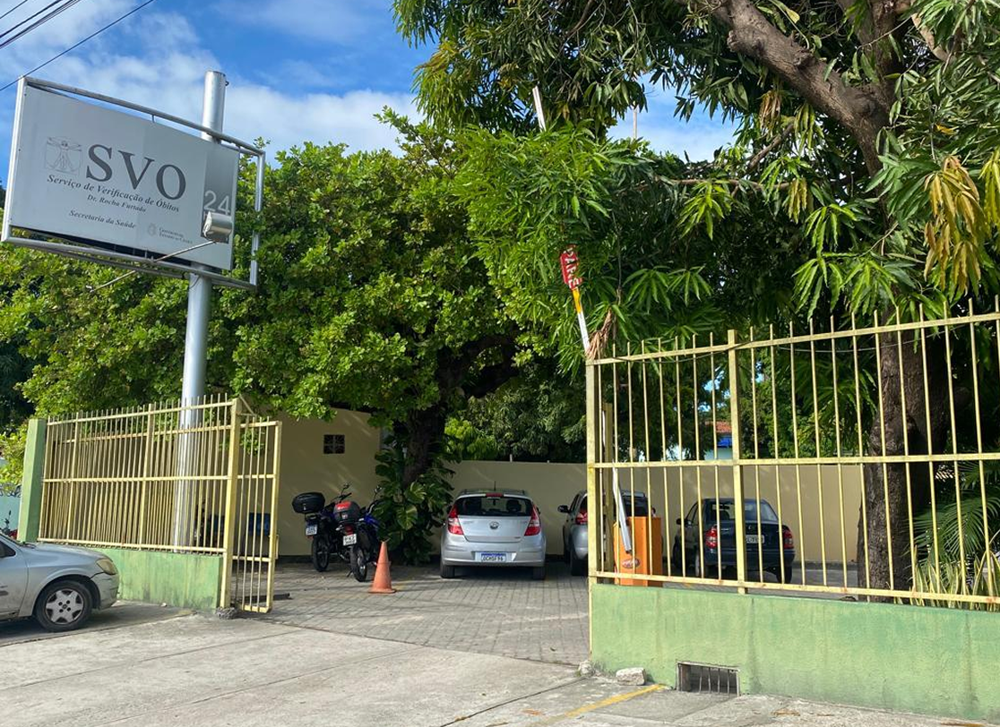

Nova sede do SVO é implantado em Aracaju para expandir seu alcance
O Serviço de Verificação de Óbito (SVO) anunciou a inauguração de uma nova sede em Aracaju, reforçando sua presença na região e ampliando seu alcance para melhor atender a população.
Pedro Ximenes

Impacto na Saúde Pública
Com a nova sede, o SVO poderá atender um número maior de casos, reduzindo a sobrecarga de outras unidades e permitindo uma investigação mais detalhada de óbitos sem causa evidente. Isso contribuirá diretamente para o aprimoramento das estatísticas de saúde e para o desenvolvimento de políticas públicas mais eficazes na prevenção de doenças. Especialistas da área destacam que a ampliação do serviço também terá impacto positivo na formação de novos profissionais, já que a unidade em Aracaju oferecerá oportunidades para estudantes e pesquisadores da área médica realizarem estudos e treinamentos voltados à patologia.
Atendimento e infraestrutura
A nova sede do SVO contará com uma estrutura moderna, equipada com laboratórios de última geração e um ambiente projetado para proporcionar um atendimento humanizado às famílias que buscam esclarecimentos sobre as causas dos óbitos de seus entes queridos. Além disso, a unidade contará com uma equipe multidisciplinar altamente qualificada para garantir eficiência e precisão nos laudos periciais.
Para mais informações sobre os novos serviços oferecidos pela sede do SVO em Aracaju, os interessados podem acessar o site oficial ou entrar em contato com a unidade.
Leia mais

Mudança de endereço do SVO prevista para Setembro.
30 Jul 2025 • por Daniela Lima

Mudança de endereço do SVO prevista para Setembro.
30 Jul 2025 • por Daniela Lima

Mudança de endereço do SVO prevista para Setembro.
30 Jul 2025 • por Daniela Lima

Mudança de endereço do SVO prevista para Setembro.
30 Jul 2025 • por Daniela Lima